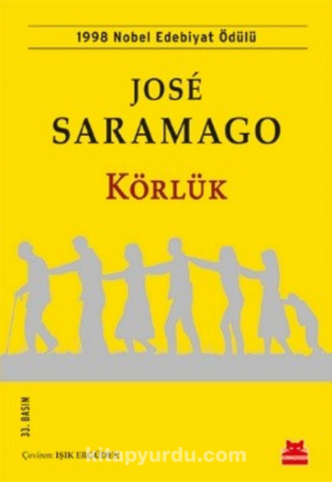
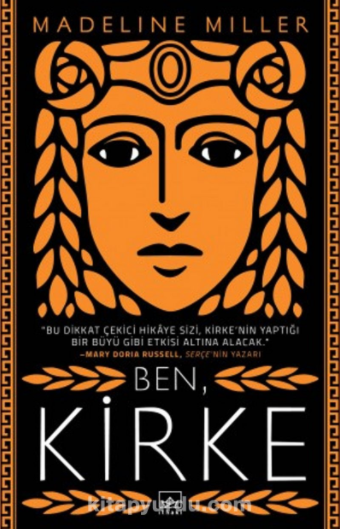
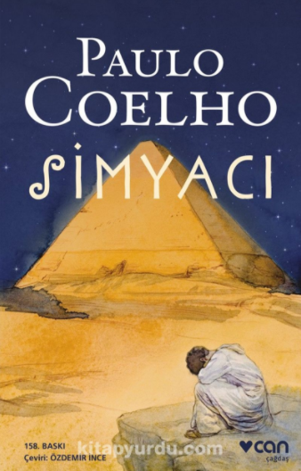
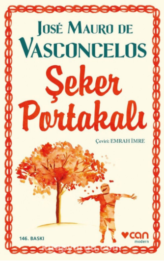

1. Körlük / Jose Saramago
Adı bilinmeyen bir ülkenin adı bilinmeyen bir kentinde, arabasının direksiyonunda trafik ışığının yeşile dönmesini bekleyen bir adam ansızın kör olur. Ancak karanlıklara değil, bembeyaz bir boşluğa gömülür. Arkasından, körlük salgını bütün kente, hatta bütün ülkeye yayılır. Ne yönetim kalır ülkede, ne de düzen; bütün körler karantinaya alınır. Hayal bile edilemeyecek bir kaos, pislik, açlık ve zorbalık hüküm sürmektedir artık. Yaşam durmuştur, insanların tek çabası, ne pahasına olursa olsun hayatta kalmaktır. Roman, kentteki akıl hastanesinde karantinaya alınan, oradan kurtulunca da birbirinden ayrılmayan, biri çocuk yedi kişiye odaklanır.

2. Ben Kirke / Madeline Miller
Ozanlar benden, –erkek– kahramanın karşısında diz çöküp merhamet dilenen bir kadın olarak bahsetti hep; ilaç katarmışım tatlı şaraplarına, büyüleyip domuza çevirirmişim hızlı giden gemilerin tayfasını, babaevini unutturur, sılaya kavuşmalarına müsaade etmezmişim. Ne demeli, kadınlara haddini bildirmek ozanların en sevdiği vakit geçirme biçimidir; yerlerde sürünüp ağlamazsak gerçek bir hikâye olmazmış gibi.
Ama yanılıyorlar, yanılıyorsunuz: Cadılık illa nefret, kıskançlık ya da başka türlü bir kötülükten doğmaz; ben ilk büyümü aşkımdan yapmıştım.

3. Simyacı / Paulo Coelho
Simyacı, Brezilyalı eski şarkı sözü yazarı Paulo Coelho'nun, yayınlandığı 1988 yılından bu yana dünyayı birbirine katan, eleştirmenler tarafından bir `fenomen' olarak değerlendirilen üçüncü romanı. Simyacı, altı yılda kırk iki ülkede yedi milyondan fazla sattı. Bu, Gabriel Garcia Marquez'den bu yana görülmemiş bir olay. Yüreğinde, çocukluğunu yitirmemiş olan okurlar için bir `klasik' kimliği kazanan Simyacı'yı Saint-Exupery'nin Küçük Prens'i ve Richard Bach'ın Martı Jonathan Livingston'u ile karşılaştıranlar var (Publishers Weekly). Simyacı, İspanya'dan kalkıp Mısır Piramitlerinin eteklerinde hazinesini aramaya giden Endülüslü çoban Santiago'nun masalsı yaşamının felsefi öyküsü. Sanki bir `nasihatnâme': `Yazgına nasıl egemen olacaksın, mutluluğunu nasıl kuracaksın?' sorularına yanıt arayan bir hayat ve ahlak kılavuzu. Mistik bir peri masalına benzeyen romanın altı yılda, yedi milyondan fazla okur bulmasının gizi, kuşkusuz, onun bu kılavuzluk niteliğinden kaynaklanıyor. Simyacı'yı okumak, herkes daha uykudayken, güneşin doğuşunu seyretmek için şafak vakti uyanmaya benziyor.

4. Şeker Portakalı / Jose Mauro De Vasconcelos
Brezilya edebiyatının klasiklerinden Şeker Portakalı, José Mauro de Vasconcelos’un başyapıtı kabul edilir. Yetişkinler dünyasının sınırlamalarına hayal gücüyle meydan okuyan Zezé’nin yoksulluk, acı ve ümit dolu hikâyesi yazarın çocukluğundan derin izler taşır.
Beş yaşındaki Zezé hemen her şeyi tek başına öğrenir: sadece bilye oynamayı ve arabalara asılmayı değil, okumayı ve sokak şarkıcılarının ezgilerini de. En yakın sırdaşıysa, anlattıklarına kulak veren ve Minguinho adını verdiği bir şeker portakalı fidanıdır…
